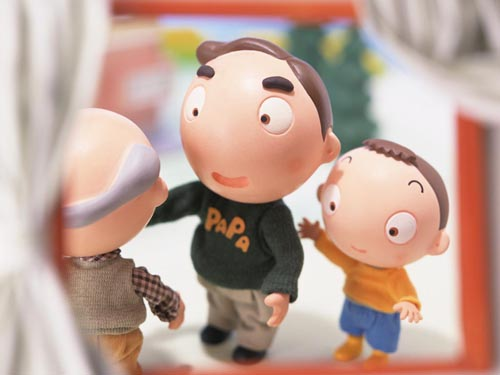

|
人人都在寻找快乐！快乐是那样少，你去寻找，却总是与他擦肩而过。快乐在哪里呢？
一天寒冷的下午，我冒着寒风赶路。赶紧找到一家火锅店，坐在窗边吃一份热餐，依然赶不走那份寒冷。店外一位大嫂带着孩子走过，孩子手里拿着一块面包，孩子吃一口，递给妈妈吃一口，从衣着上看他们不是很富有，但他们是那样的快乐并不比别人少，看他们分享着快乐，寒冷似乎也对他们失去了作用。快乐不是索取，而是施与，快乐虽不是昂贵的，但用再多的金钱也买不到的珍重的快乐要用心去体验的……  一个双目失明的孩子，在公园里的浮雕上细细的摸着，满脸的专注。忽然转过身，对身后的父母说，我看见了，看到了绿色的田野，还看到了成群的鸽子……快乐是要与人分享的，给与的越多，收获得越多。 生活中，我们追寻着快乐，快乐也时刻在我们身边，只不过很多时候，我们处在快乐之中，从不同的角度看到的总是别人的快乐风景，往往忽略了自己所拥有的那片快乐天地。 |